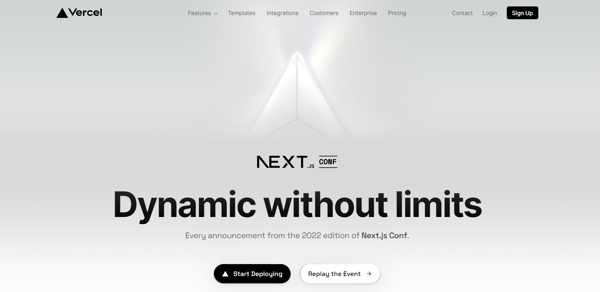
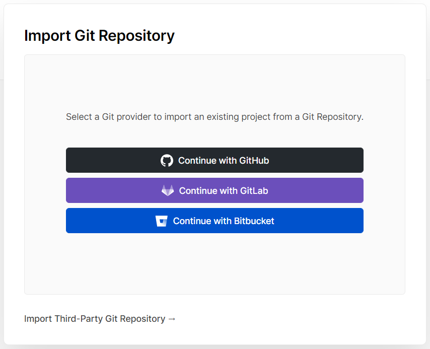
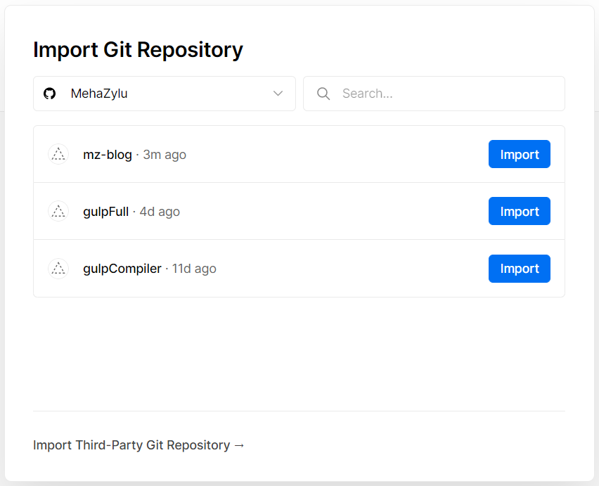
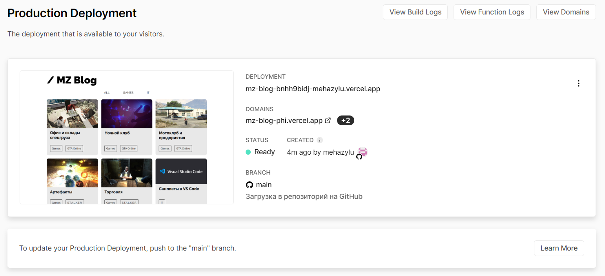
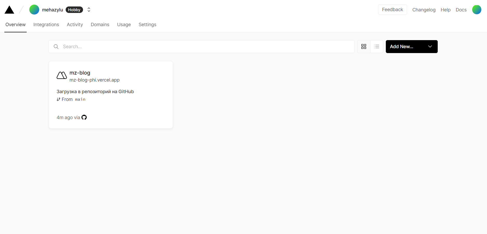

Бесплатный хостинг Vercel
vercel.comДанный сервис позволяет собирать и размещать статические веб-сайты на различных фреймворках (поддерживаются как JS-фреймворки, так и, например, генераторы статических сайтов - Hexo, Hugo, Jekyll и другие). Для каждого проекта выделяется несколько бесплатных доменных имен третьего уровня, есть возможность предпросмотра сборки.
Вот что включает в себя бесплатный тариф Hobby:
- 50 пользовательских доменов
- 100 Гб файлового пространства
- 100 Гб ежемесячного трафика
- Неограниченное количество проектов
- CLI-интерфейс
- Serverless, CDN, CI/CD
Удобный хостинг к которому можно напрямую подключить репозиторий с GitHub. Он будет обновлять сайт, по мере обновления репозитория, то есть он следит за версией сайта по последнему коммиту в репозитории.
Регистрация и настройка
Жмём на Start Deploying
Далее авторизуемся с помощью аккаунта на GitHub. После этого действия нужно снова нажать на авторизацию с помощью GitHub и разрешить хостингу доступ к нашим репозиториям.
Импортируем нужный репозиторий
Откроется дашборд для настройки нашего сайта, здесь есть вся необходимая информация о состоянии сайта.
- Domains - адрес сайта в сети
- Branch - ветка из которой хостинг берёт файлы и коммит состояния файлов, которые сейчас использует хостинг для сайта, проще говоря актуальная версия файлов сайта
В дашборде хостинга показываются все добавленные сайты.
